📋 Table of Contents
• Missing Data Overview • Score Distribution • Score Percentiles • Type Breakdown • Temporal Trends • Decade Analysis • Seasonal Patterns • Genre Analysis • Genre Co-occurrence Heatmap • Genre Trends Over Decades • Studio Analysis • Popularity vs Quality • Most Popular Anime • Episodes & Duration Analysis • Source Material Analysis • Age Rating Analysis • Top 25 Anime • Bottom 25 Anime • Hidden Gems vs Overrated • Themes Analysis • Correlation Matrix • Status BreakdownMissing Data Overview
17 columns have missing values. 'season' and 'year' are most sparse (only available for ~6.4K entries).
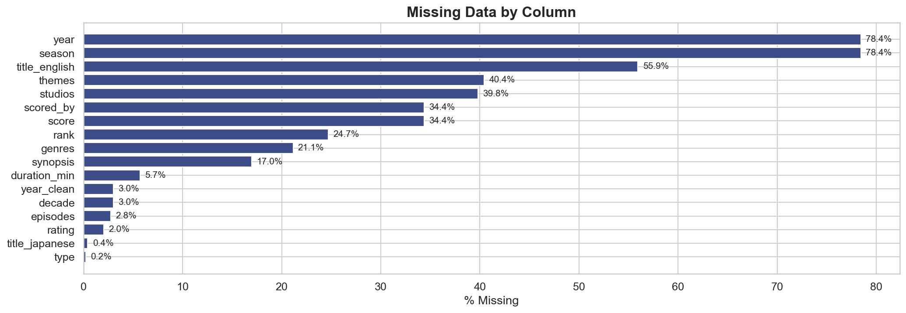Score Distribution
Mean score: 6.39, Median: 6.36. Scores are left-skewed, clustering around 6-7.
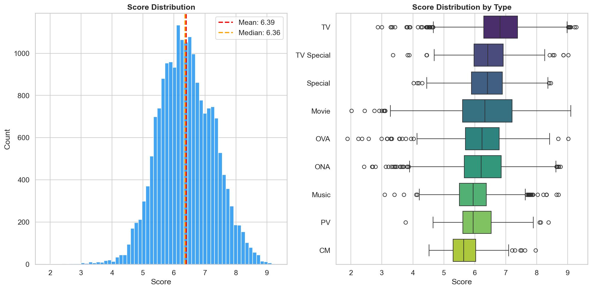Score Percentiles
Top 1% of anime have a score ≥ 8.43. Bottom 1% score ≤ 4.37.
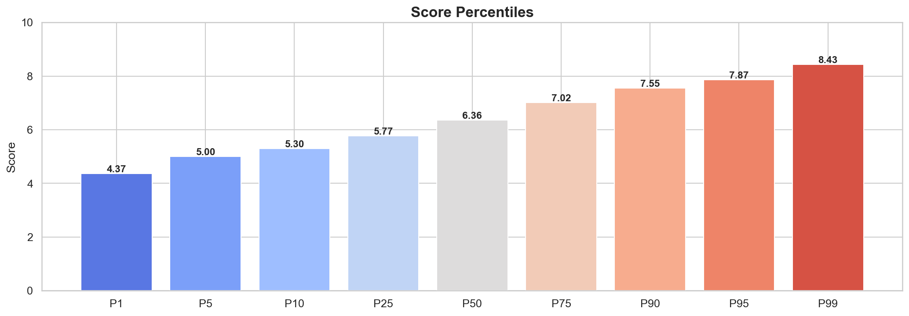Type Breakdown
Most common type: TV (8,611). Highest avg score type: TV.
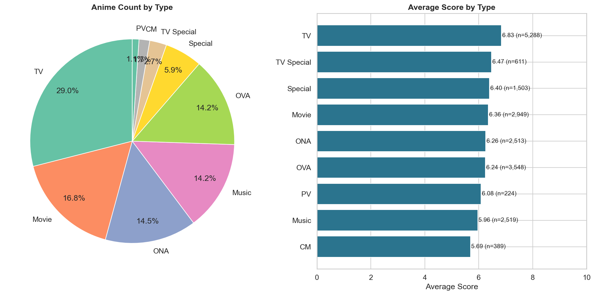Temporal Trends
Anime production peaked in 2017 with 1,267 titles.
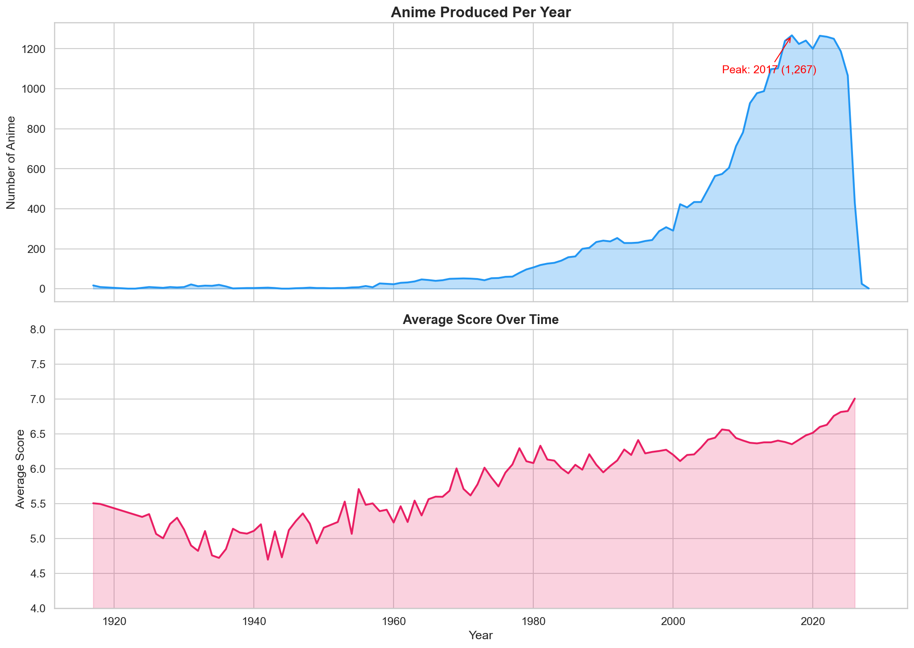Decade Analysis
The 2010s and 2020s saw an explosion of anime production.
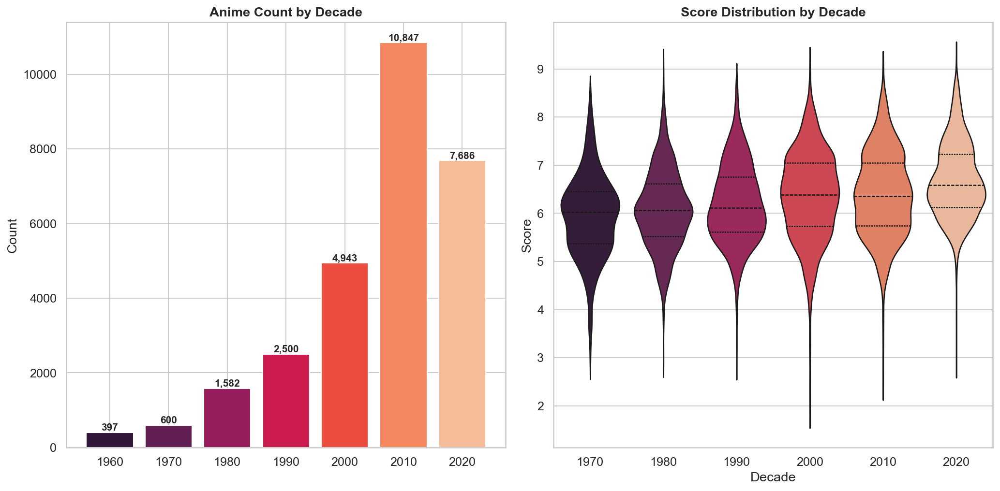Seasonal Patterns
Analysis of anime releases by season (winter, spring, summer, fall).
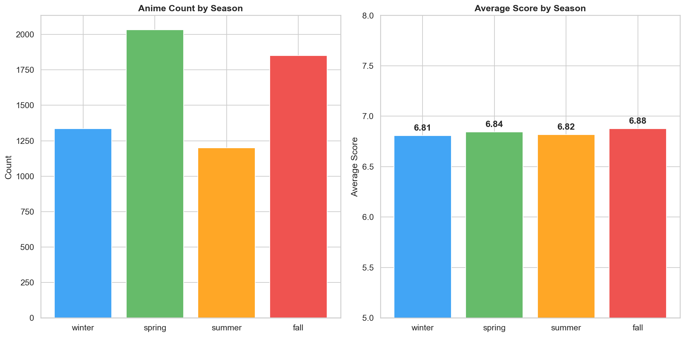Genre Analysis
Most common genre: Comedy (7,929). Highest rated genre: Award Winning.
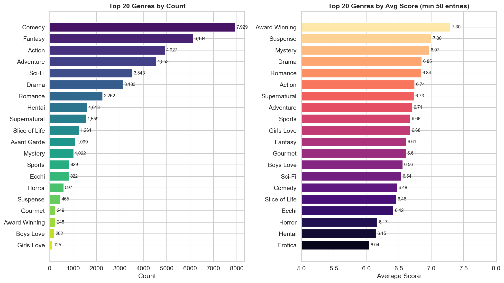Genre Co-occurrence Heatmap
Shows how often the top genres appear together on the same anime.
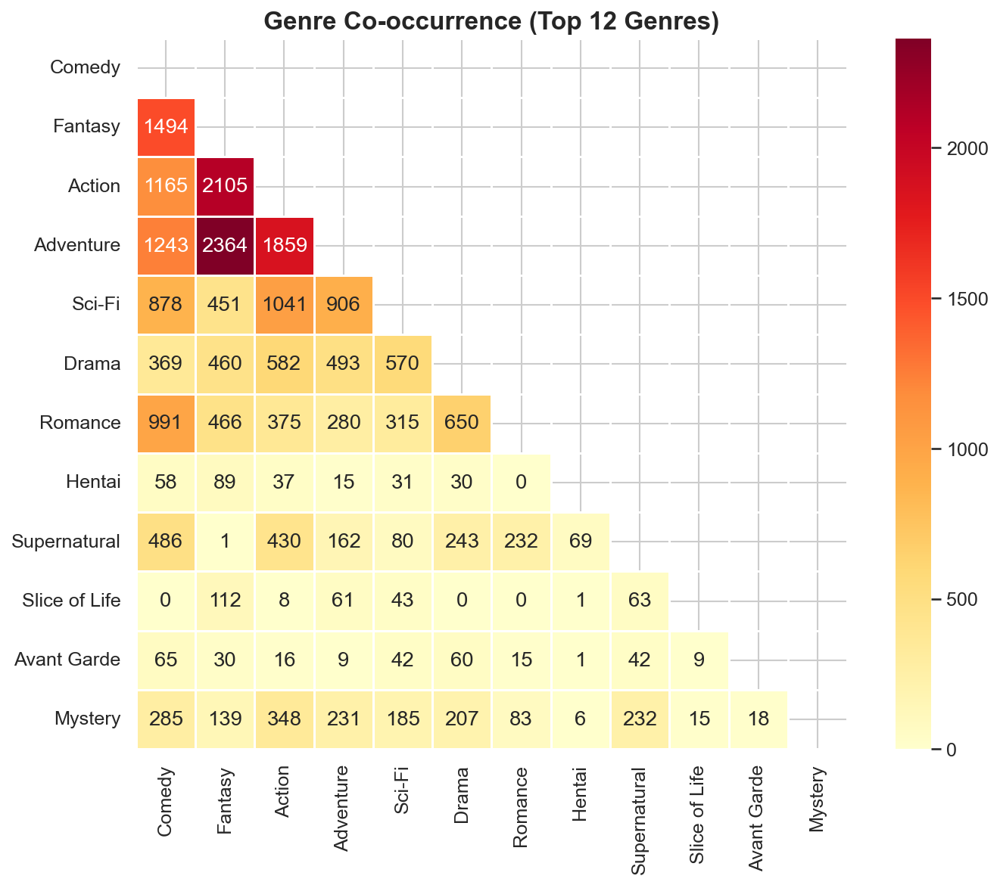Genre Trends Over Decades
How the popularity of top genres has shifted across decades.
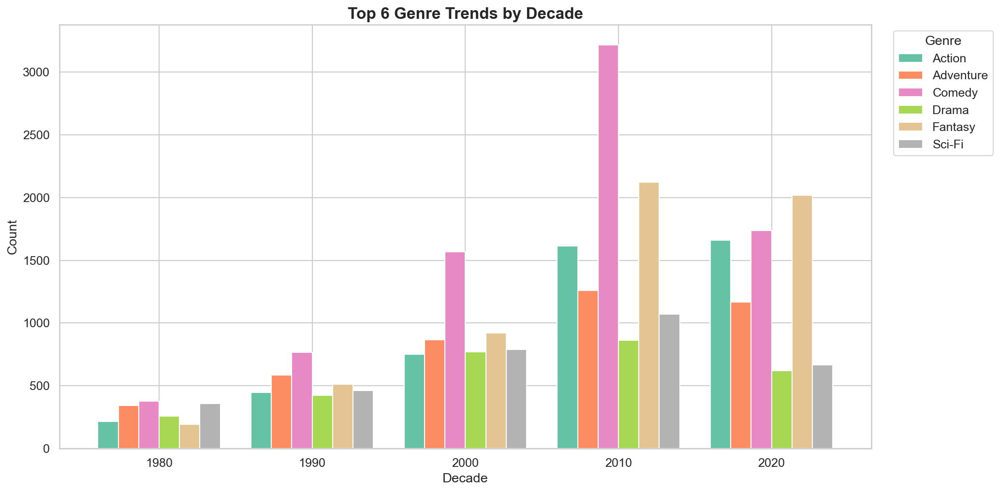Studio Analysis
Most prolific studio: Toei Animation (927 anime). Highest rated: Shuka.

Popularity vs Quality
Correlation between log(members) and score: r=0.676. More popular anime tend to have higher scores.
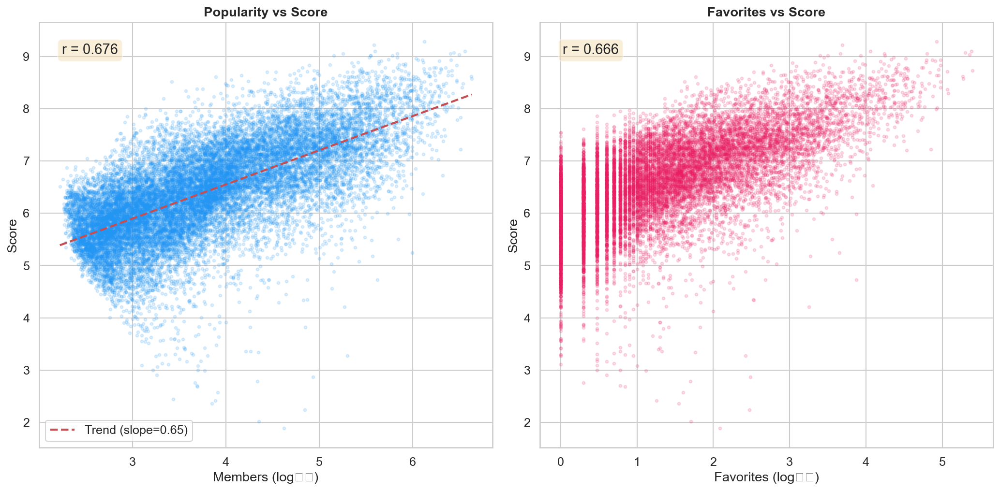Most Popular Anime
Most popular: Shingeki no Kyojin (4,304,264 members).

Episodes & Duration Analysis
Median episode count: 2.
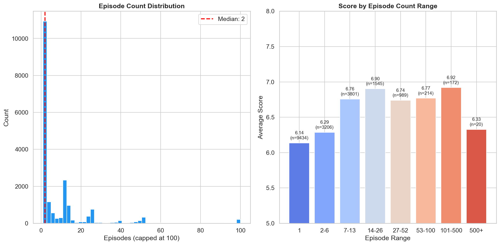Source Material Analysis
Most common source: Original (12,761).
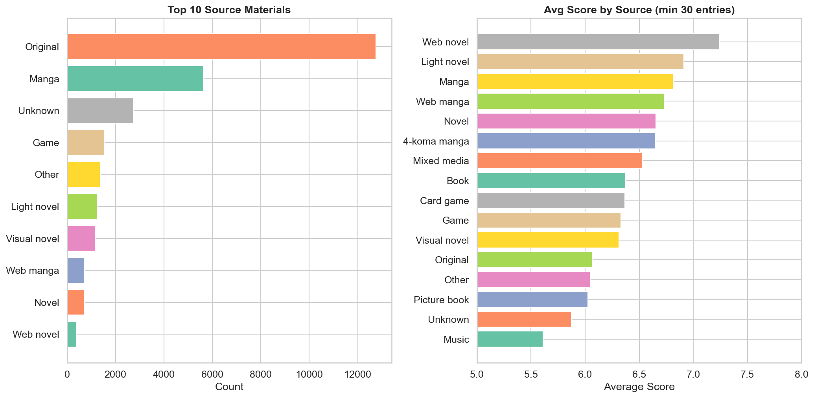Age Rating Analysis
Score distributions vary by content rating.
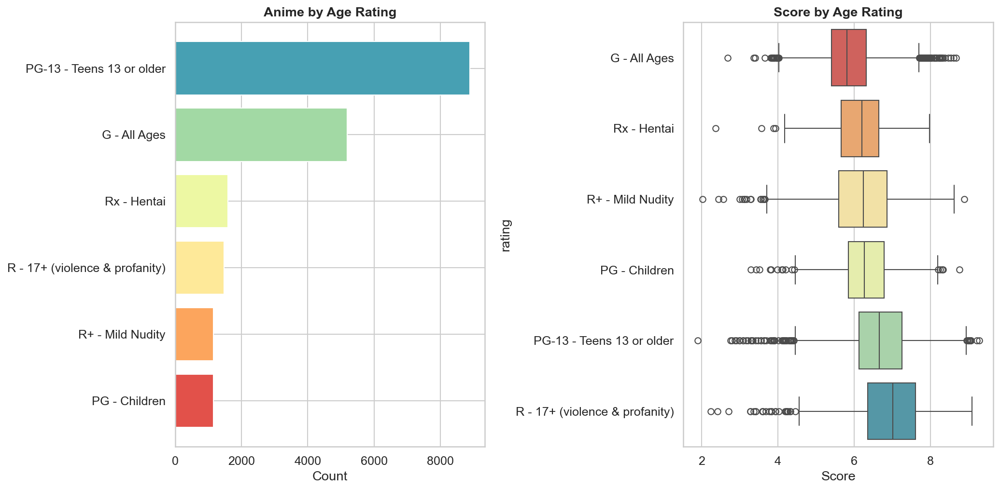Top 25 Anime
#1: Sousou no Frieren (9.28).

Bottom 25 Anime
Lowest rated: Tenkuu Danzai Skelter+Heaven (1.89).


Themes Analysis
Most common theme: Music (5,372).

Correlation Matrix
Members, scored_by, and favorites are highly correlated. Score shows moderate positive correlation with popularity metrics.
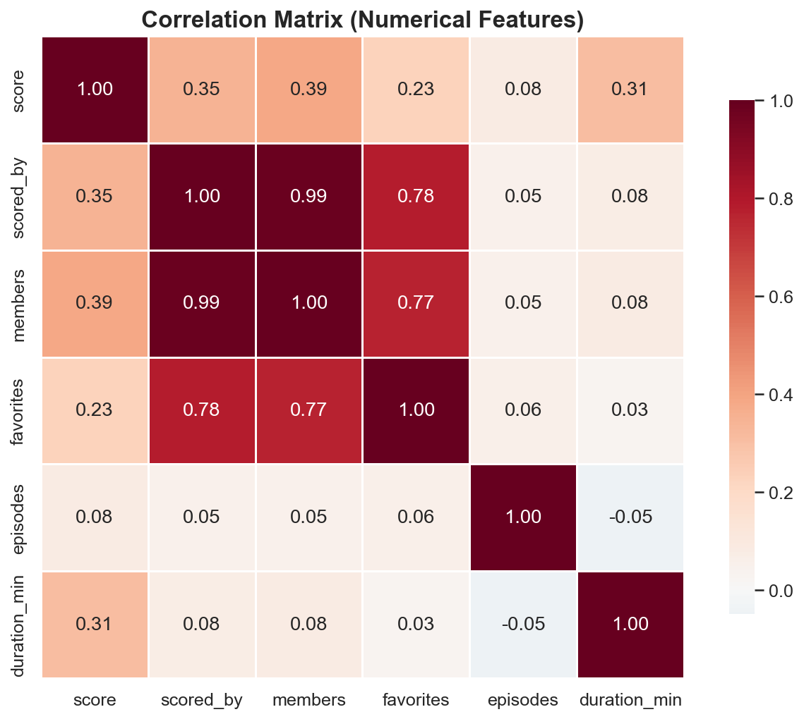Status Breakdown
Distribution of anime by airing status.
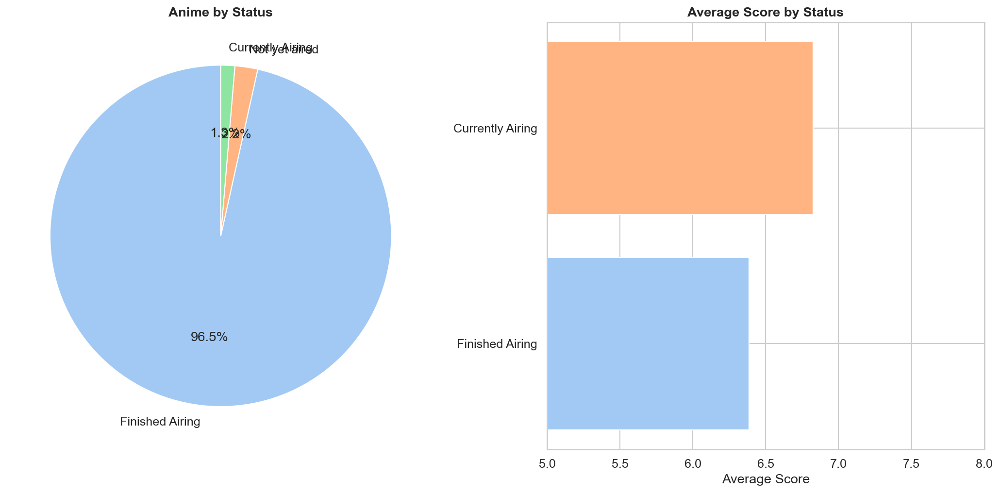